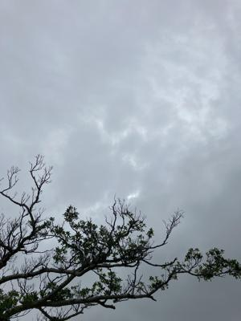
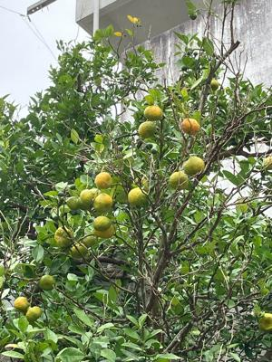

うるがいの話 ある日
最新: 英語多読法【うるがいの話 ある日】とは 一日だけのプログです
『うるがいの話』の最新一日だけのプログで、通信料が少なく経済的だ。カニの画像をクリックすると全ての日付が載る『うるがいの話』サイトを表示します
|
|
【うるがいの話】 うるがい(ｳﾙｶﾞｲ urugai)とは、『もずくがに』の名前でとても大きくなります。 |
|---|---|
|
|
【カミマヤーの話】 猫のことを方言でマヤーといいます。カミマヤー（kamimayaa）とは、神の猫のことです。 |
|
【たながぁの音楽】 たながぁ（ﾀﾅｶﾞｰ tanagaa）とは手長えびのことで、何種類かあり大きいのは車 エビぐらいになります。 |

|
【ぶながぁの話】 ぶながぁ(ﾌﾞﾅｶﾞｰ bunagaa)とは、赤い髪の毛、赤い身体、そして身長は１ｍ２０ｃｍ ぐらい、川の蟹を食べているの目撃された。場所は沖縄県国頭郡大宜味村のと ある村僕の隣近所に住んでいる爺さんから、聞いた話です。 |
|
|
【ギーマの話】 ギーマ(giima)とは、山原の里山に咲くスズランに似た、 花を付けます。実は食べられます、 気が付くと口の周りが紫になっています。 |
2024年05月15日 (水）英語多読法
15:15

ちょうど一年前、『アルジャーノンに花束を』を日本語の本と思って借りた
ら日本語のルビがところどころにある英語の本だった。その後ちんたら、多
読ように作成された２５冊の英語の本を読む。図書館から借りたのは４冊、
それ以外は、以前に購入した本（５０冊ほどある）を読んでいる。「めざせ
１００万語多読入門』という本も、はるかに昔に買っていた。一年かけて読
んだ総単語数は、約３２万である。レベルの低いやさいしい、本から読み始
め、いまは少しレベルの高い本が残っているのみである。ホホー、あと３年
続ければ、百万に近くなるか。マ、時間はたっぷりあるので。ところで、内
容は理解しているかと言えば・・・・、微妙である。この前、『チップス先
生さようなら』を読んだが、ユーモアに満ちた英国人気質の愛すべき老教師
・・・、ユーモアが本に書かれていた筈だが、読み終えたあとユーモアがど
こになかったジャンと気づく。

本土復帰５２年、世の中がここまで悪くなるとは思わなかった。去年の台風
の後に、実をつけた去年のミカンと今年のミカンが混在しているシークヮー
サーの木がある、去年のミカンは食べごろである、食べないのかしらと見る
たびの思う。
１５時０４分 ビットコインの総資産 ￥２８、１１０（↓３２４）